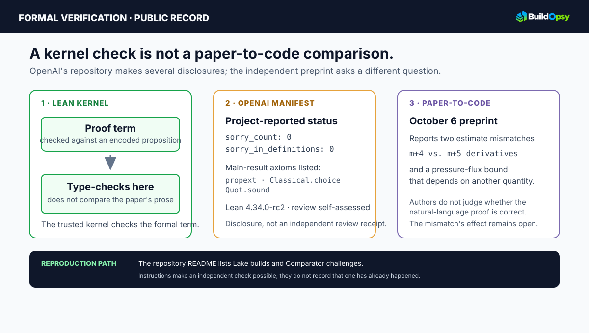
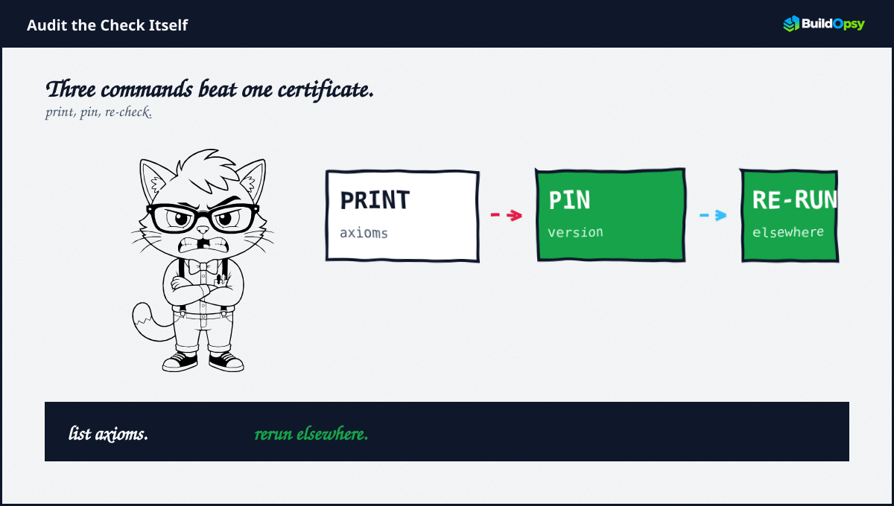

1. What OpenAI Published
OpenAI's September 8 announcement says its internal system produced a finite-time blow-up result for Navier–Stokes statements C and D in the Clay formulation, and links both the paper and a Lean repository. The company reports that its agents reached the Navier–Stokes result about 88 hours after launch and that Lean formalization and verification took another 17 hours. It also reports 2.7 million messages and approximately 130 billion output tokens for this problem. These are OpenAI-reported process figures.
The repository makes its formal files public. A later, October 6 preprint by Bastounis, Circelli and Hansen compares selected paper estimates with cited Lean declarations and reports mismatches. The authors explicitly do not assess whether the natural-language proof is correct. The preprint is a separate analysis published nearly a month after OpenAI's announcement, not a same-week competing proof.
2. What the Kernel Guarantees
Lean's trusted kernel checks proof terms against their encoded types. Tactics, automation and language-model-generated search can propose terms, but those terms must still pass the kernel. Assuming the kernel and its declared axioms are sound, an invalid term cannot pass that check.
The kernel establishes that the term proves the proposition encoded in the environment. It does not establish that the proposition matches the intended theorem, that the paper's arguments were faithfully translated, or that the build used the expected toolchain.

3. What It Does Not
sorry can fill a proof obligation. Lean's reference explains that the tactic relies on sorryAx, which can inhabit any type, and says it should not occur in finished proofs. OpenAI's repository manifest reports sorry_count: 0 and sorry_in_definitions: 0 for the project and its listed main results. That is a repository declaration, not an independent check of every source file.
Axiom dependencies can be inspected. Lean's #print axioms command lists the axioms used by a declaration, directly or transitively. OpenAI's manifest lists propext, Classical.choice and Quot.sound for its main results; Lean documents these as standard axioms. The public metadata does not report a custom axiom for those results.
A different theorem can check fine. The kernel verifies terms against encoded statements; it has no access to the author's intent. A definition or theorem statement that differs from the paper can still have a valid proof term. Correspondence is a separate mathematical question.
Reproducibility depends on the recorded environment. OpenAI's README identifies Lean 4.34.0-rc2 and documents Lake and Mathlib build steps, and separate Comparator commands. A pinned toolchain makes a rerun more reproducible; it does not establish that the formal statement faithfully represents the paper's intended statement.
4. The Checklist
Print the axioms for the declarations that matter, then compare the output with the project manifest. OpenAI's manifest lists three standard axioms for its main results. Any difference between source and manifest is a question to investigate, not automatic evidence of a flaw.
Check sorry use in the source and final declarations. OpenAI's manifest reports zero for the project and its main results; that is a repository declaration, not an independent source audit.
Preserve the recorded environment. OpenAI's repository pins Lean 4.34.0-rc2 and gives Mathlib/Lake build instructions. Record the exact commit and build flags when reproducing it.
The README also documents Comparator challenges for Navier–Stokes and Euler. The manifest marks review as self-assessed; its build instructions provide a route for independent checking, not a receipt that such a check has already happened.
Read the statement like opposing counsel. The kernel checks terms against the encoded proposition; it cannot decide whether that proposition preserves the paper's intended theorem. Compare definitions and assumptions before treating a successful build as evidence about the written proof.
5. Applied to the Public Repository and Preprint
The repository's formalization.yaml claims full formalization of its listed main results, zero sorry uses, and the three standard axiom dependencies. It marks the review status as self-assessed. The README pins Lean 4.34.0-rc2 and documents Lake and Comparator commands. These files disclose a version, axioms and a route for independent checking; the repository does not provide an independent review receipt.
The October 6 preprint reports two paper-to-Lean differences: an m+4 versus m+5 derivative requirement and a pressure-flux estimate whose formal version also depends on another quantity. The authors say these differences limit what the cited Lean estimates establish about correspondence; they do not conclude that the written proof is false. The mathematical effect remains for expert review.
6. The Verdict
OpenAI has published a paper, a Lean repository, a project manifest and instructions for external Comparator checks. The manifest reports zero sorry use, lists the standard axioms for the main results, and labels its review as self-assessed. The October 6 preprint reports two mismatches in cited estimates; its authors do not judge the natural-language proof itself.
Kernel checking and paper-to-code correspondence answer different questions. The public files document a pinned route to reproduce the first. Whether the formal statements faithfully capture every relevant estimate in the paper—and what the reported mismatches mean for the full argument—remains open.
OpenAI reports a Lean formalization. The paper-to-code correspondence still needs review.
Sources and Method
Related file on this site: OpenAI's Navier–Stokes Proof: Two Paper-to-Lean Mismatches. This audit follows OpenAI's September 8 announcement and public repository, Lean 4.34.0-rc2 documentation, and the October 6 arXiv v1 preprint. Repository metadata is attributed to OpenAI; the preprint's findings are attributed to its authors. No independent build or Comparator run is claimed here.
- OpenAI: On the Navier–Stokes Millennium Prize Problem (September 8, 2026)
- OpenAI: Finite time blowup for Navier–Stokes (paper PDF)
- OpenAI: NavierStokesAndEuler repository at commit f9e8bc5
- OpenAI: formalization manifest at commit f9e8bc5 (sorry counts, axioms and self-assessed review status)
- OpenAI: repository README at commit f9e8bc5 (Lean version and build instructions)
- OpenAI: lean-toolchain file at commit f9e8bc5
- OpenAI: Comparator challenge instructions at commit f9e8bc5
- Lean 4.34.0-rc2 reference: axioms, sorryAx and #print axioms
- Bastounis, Circelli and Hansen: Navier–Stokes lost in translation, arXiv v1 (October 6, 2026), §§3.1–3.2